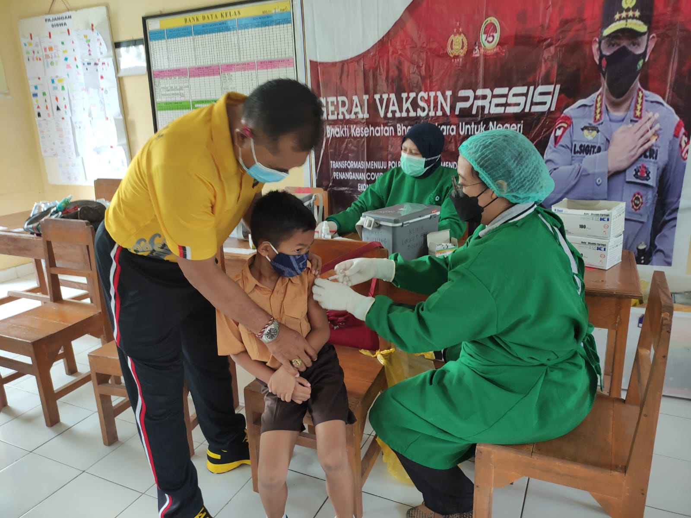
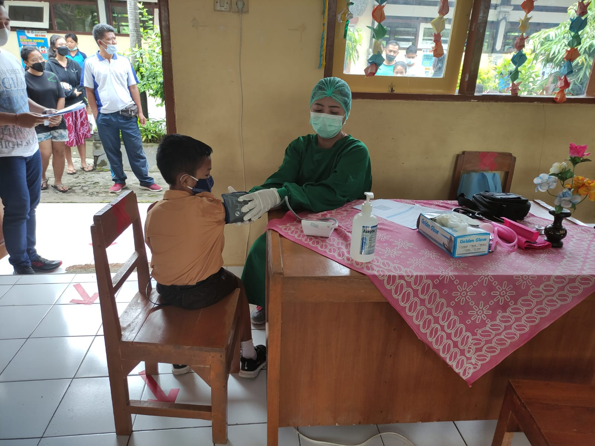
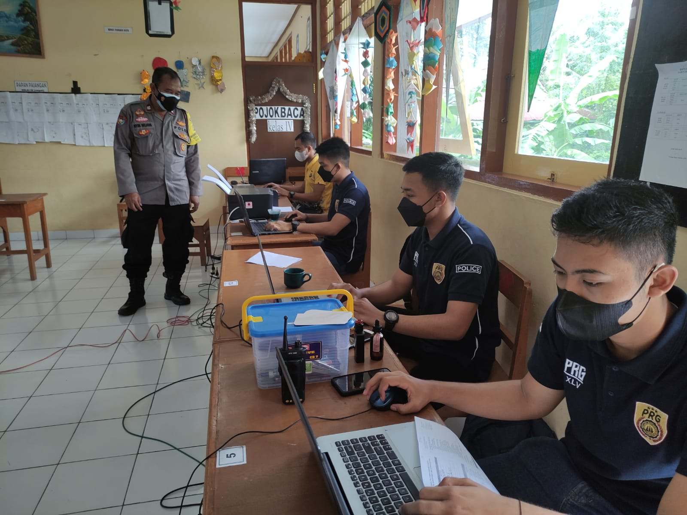
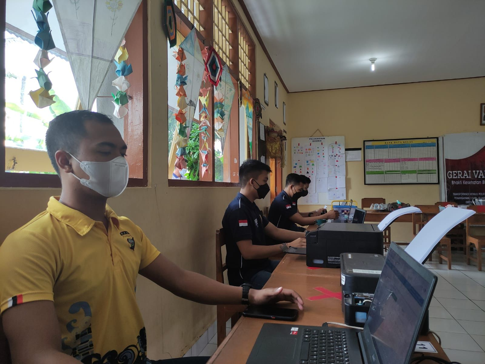
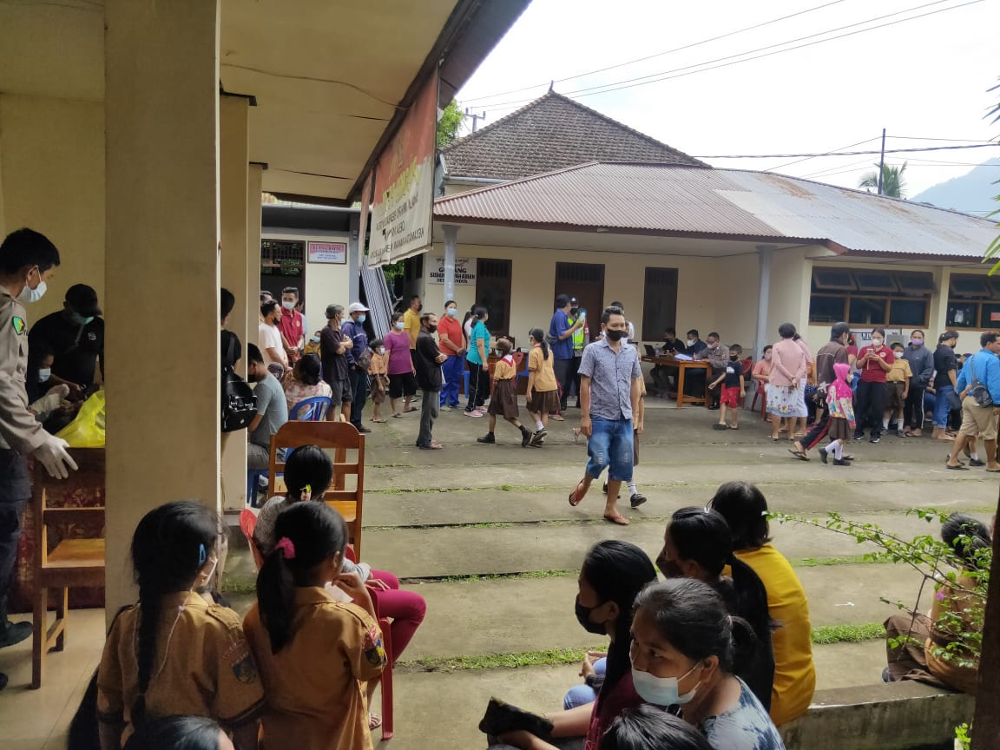

Samapta
- Vaksinasi Presisi
Pada hari Sabtu, 29 Januari 2022, pkl 09.00 wita, Personel Unit Dalmas Sat Samapta Polres Buleleng, melaksanakan giat vaksinasi yang bertempat di SD no 6 Desa Panji sukasada dan di Kantor Desa Adat Munduk, Kec. Banjar, Kabupaten Buleleng.




